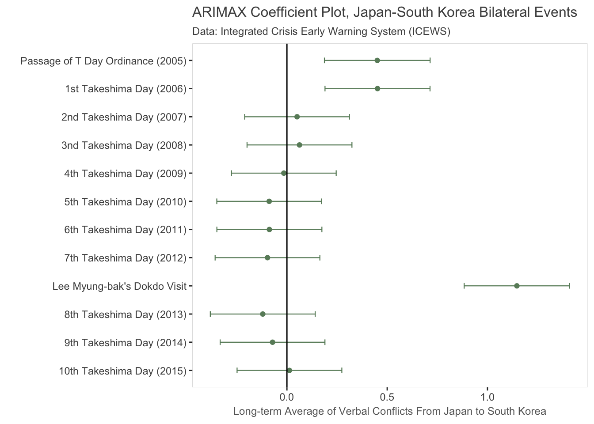
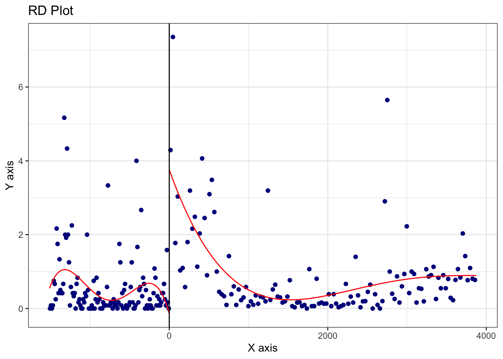
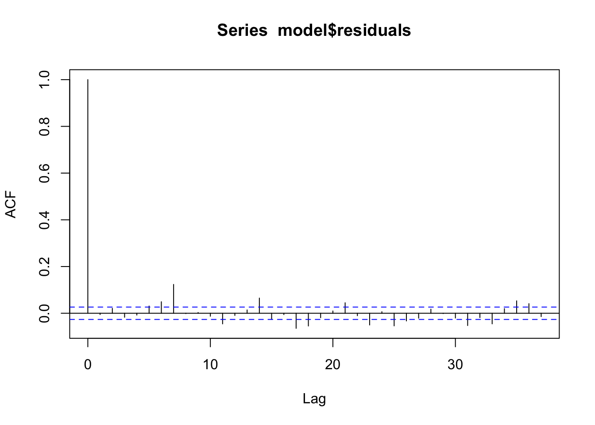
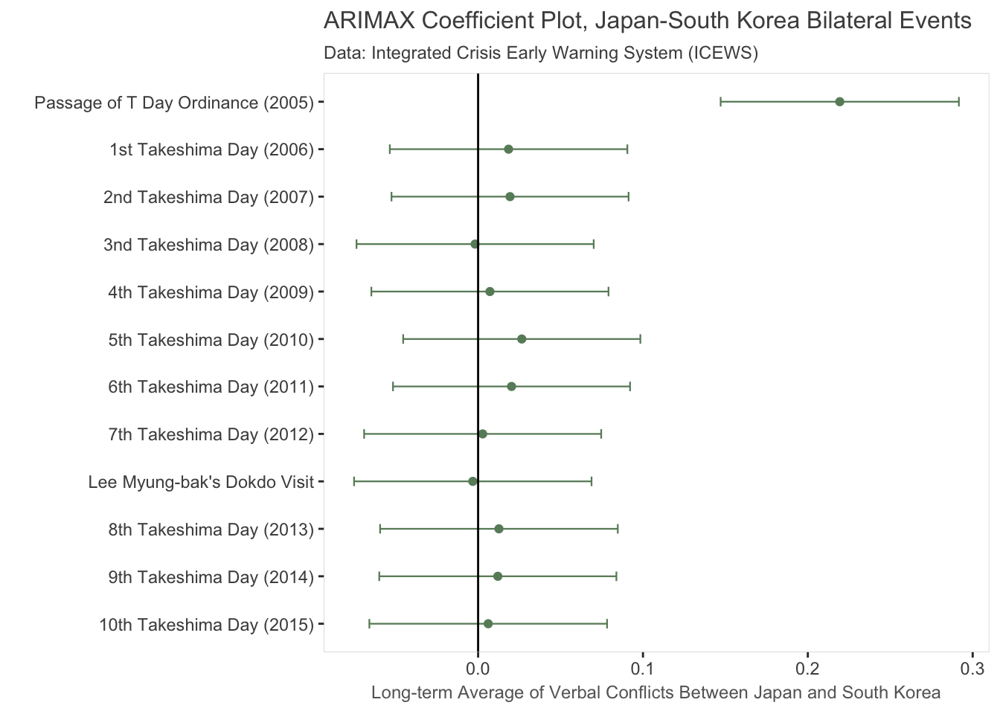

5 IRF, ARIMAX and the “Takeshima Day” puzzle
5.1 IRF
pd = 90
takeshima <- ritualized_day %>%
mutate(
`Passage of T Day Ordinance (2005)` =
ifelse(as_date(time) %in% seq(as_date("2005/02/21"), by="days", length.out=pd),1,0),
`1st Takeshima Day (2006)` =
ifelse(as_date(time) %in% seq(as_date("2006/02/21"), by="days", length.out=pd),1,0),
`2nd Takeshima Day (2007)` =
ifelse(as_date(time) %in% seq(as_date("2007/02/21"), by="days", length.out=pd),1,0),
`3nd Takeshima Day (2008)` =
ifelse(as_date(time) %in% seq(as_date("2008/02/21"), by="days", length.out=pd),1,0),
`4th Takeshima Day (2009)` =
ifelse(as_date(time) %in% seq(as_date("2009/02/21"), by="days", length.out=pd),1,0),
`5th Takeshima Day (2010)` =
ifelse(as_date(time) %in% seq(as_date("2010/02/21"), by="days", length.out=pd),1,0),
`6th Takeshima Day (2011)` =
ifelse(as_date(time) %in% seq(as_date("2011/02/21"), by="days", length.out=pd),1,0),
`7th Takeshima Day (2012)` =
ifelse(as_date(time) %in% seq(as_date("2012/02/21"), by="days", length.out=pd),1,0),
`Lee Myung-bak's Dokdo Visit` =
ifelse(as_date(time) %in% seq(as_date("2012/08/09"), by="days",length.out=pd),1,0),
`8th Takeshima Day (2013)` =
ifelse(as_date(time) %in% seq(as_date("2013/02/21"), by="days", length.out=pd),1,0),
`9th Takeshima Day (2014)` =
ifelse(as_date(time) %in% seq(as_date("2014/02/21"), by="days", length.out=pd),1,0),
`10th Takeshima Day (2015)` =
ifelse(as_date(time) %in% seq(as_date("2015/02/21"), by="days", length.out=pd),1,0),
`Verbal Conflict` = ts(`Verbal Conflict`, frequency=7),
`Material Conflict` = ts(`Material Conflict`, frequency=7)) %>%
dplyr::select(`Verbal Conflict`,`Material Conflict`, `Passage of T Day Ordinance (2005)`:
`10th Takeshima Day (2015)`)
#VARselect(takeshima$`Verbal Conflict`, lag.max = 100)
# 1
#irf(VAR(takeshima %>% dplyr::select(`Verbal Conflict`, takeshima1), p=38), impulse = "takeshima1", "Verbal.Conflict") %>% plot()
#irf(VAR(takeshima %>% dplyr::select(`Verbal Conflict`, takeshima2), p=7), impulse = "takeshima2", "Verbal.Conflict") %>% plot()
# 25.2 ARIMAX
auto.arima(takeshima$`Verbal Conflict`)## Series: takeshima$`Verbal Conflict`
## ARIMA(3,0,3) with non-zero mean
##
## Coefficients:
## ar1 ar2 ar3 ma1 ma2 ma3 intercept
## 1.9385 -1.6632 0.6655 -1.6223 1.2279 -0.4147 1.0803
## s.e. 0.0474 0.0892 0.0496 0.0537 0.0953 0.0489 0.1281
##
## sigma^2 estimated as 6.251: log likelihood=-9202.38
## AIC=18420.75 AICc=18420.79 BIC=18470.99Verbal_conf <- arima(takeshima$`Verbal Conflict`, c(3,0,3),
xreg = takeshima[,3:14] ) cbind(broom::tidy(Verbal_conf)[8:19,], order=12:1) %>%
ggplot(aes(x=estimate, y=fct_reorder(term, order))) + geom_point(color="darkseagreen4") +
geom_vline(xintercept = 0, color="grey30", size = 0.1) +
geom_vline(xintercept = -2, color="grey80", size = 0.1) +
geom_vline(xintercept = 2, color="grey80", size = 0.1) +
geom_vline(xintercept = 4, color="grey80", size = 0.1) +
geom_errorbarh(aes(xmin=estimate+(std.error*qnorm(0.05)),
xmax=estimate+(std.error*qnorm(0.95))),
size = 0.4, height=0.2, color="darkseagreen4") +
labs(x="Long-term Average of Verbal Conflicts Between Japan and South Korea",
y = "",
title= "ARIMAX Coefficient Plot, Japan-South Korea Bilateral Events",
subtitle="Data: Integrated Crisis Early Warning System (ICEWS) ")+
scale_x_continuous(limits=c(-2,5)) +
theme(
panel.background = element_blank(),
panel.border = element_rect(size=0.2, fill=NA, color="grey80"),
axis.title = element_text(size=9, color="grey40"),
title = element_text(size=10, color="grey30")
)
auto.arima(takeshima$`Material Conflict`)## Series: takeshima$`Material Conflict`
## ARIMA(1,0,2)(0,0,1)[7] with non-zero mean
##
## Coefficients:
## ar1 ma1 ma2 sma1 intercept
## 0.8112 -0.5968 -0.0503 0.0388 0.2385
## s.e. 0.0392 0.0426 0.0220 0.0171 0.0299
##
## sigma^2 estimated as 0.9363: log likelihood=-5461.39
## AIC=10934.79 AICc=10934.81 BIC=10972.46material_conf <- arima(takeshima$`Material Conflict`, c(3,0,3),
xreg = takeshima[,3:14])
cbind(broom::tidy(material_conf)[8:19,], order=12:1) %>%
ggplot(aes(x=estimate, y=fct_reorder(term, order))) + geom_point(color="darkseagreen4") +
geom_vline(xintercept = 0) +
geom_errorbarh(aes(xmin=estimate+(std.error*qnorm(0.05)),
xmax=estimate+(std.error*qnorm(0.95))),
size = 0.2, height=0.2, color="darkseagreen4") +
labs(x="Effect on Japan-South Korea Material Conflicts", y = "Pulse from Bilateral Events") +
theme(
panel.background = element_blank(),
panel.border = element_rect(size=0.2, fill=NA, color="grey80")
)
VC <- ts(ritualized_day$`Verbal Cooperation` , frequency = 7)
#auto.arima(VC)
#auto.arima(diff(VC))
#summary(ur.df(VC, lags=10, type="trend"))
VC.arimax <- arima(diff(VC), c(0,0,4), xreg = takeshima[-1,3:14]) cbind(broom::tidy(VC.arimax)[6:17,], order=12:1) %>%
ggplot(aes(x=estimate, y=fct_reorder(term, order))) + geom_point() +
geom_vline(xintercept = 0) +
geom_errorbarh(aes(xmin=estimate+(std.error*qnorm(0.05)),
xmax=estimate+(std.error*qnorm(0.95))), size = 0.2, height=0.2, color="darkseagreen4") +
labs(x="Effect on Japan-South Korea Verbal Cooperation", y = "Pulse from Bilateral Events")
5.3 Directional ARIMAX
data <- ritualized_day %>% dplyr::select(time,`Verbal Conflict`) %>%
mutate(time = as_date(time))
pd = 30
K2J <- tibble(time = seq(as_date("2001-01-01"), by="days", length.out = 5477)) %>%
left_join(data, by = "time") %>% replace_na(replace=list(`Verbal Conflict`=0)) %>%
mutate(`Verbal Conflict`= ts(`Verbal Conflict`),
`Passage of T Day Ordinance (2005)` =
ifelse(as_date(time) %in% seq(as_date("2005/02/21"), by="days", length.out=pd),1,0),
`1st Takeshima Day (2006)` =
ifelse(as_date(time) %in% seq(as_date("2006/02/21"), by="days", length.out=pd),1,0),
`2nd Takeshima Day (2007)` =
ifelse(as_date(time) %in% seq(as_date("2007/02/21"), by="days", length.out=pd),1,0),
`3nd Takeshima Day (2008)` =
ifelse(as_date(time) %in% seq(as_date("2008/02/21"), by="days", length.out=pd),1,0),
`4th Takeshima Day (2009)` =
ifelse(as_date(time) %in% seq(as_date("2009/02/21"), by="days", length.out=pd),1,0),
`5th Takeshima Day (2010)` =
ifelse(as_date(time) %in% seq(as_date("2010/02/21"), by="days", length.out=pd),1,0),
`6th Takeshima Day (2011)` =
ifelse(as_date(time) %in% seq(as_date("2011/02/21"), by="days", length.out=pd),1,0),
`7th Takeshima Day (2012)` =
ifelse(as_date(time) %in% seq(as_date("2012/02/21"), by="days", length.out=pd),1,0),
`Lee Myung-bak's Dokdo Visit` =
ifelse(as_date(time) %in% seq(as_date("2012/08/09"), by="days",length.out=pd),1,0),
`8th Takeshima Day (2013)` =
ifelse(as_date(time) %in% seq(as_date("2013/02/21"), by="days", length.out=pd),1,0),
`9th Takeshima Day (2014)` =
ifelse(as_date(time) %in% seq(as_date("2014/02/21"), by="days", length.out=pd),1,0),
`10th Takeshima Day (2015)` =
ifelse(as_date(time) %in% seq(as_date("2015/02/21"), by="days", length.out=pd),1,0))
auto.arima(K2J$`Verbal Conflict`)## Series: K2J$`Verbal Conflict`
## ARIMA(1,1,1)
##
## Coefficients:
## ar1 ma1
## 0.3116 -0.9501
## s.e. 0.0159 0.0073
##
## sigma^2 estimated as 4.727: log likelihood=-12022.69
## AIC=24051.37 AICc=24051.38 BIC=24071.2diff_vc <- diff(K2J$`Verbal Conflict`)
auto.arima(diff_vc)## Series: diff_vc
## ARIMA(1,0,1) with zero mean
##
## Coefficients:
## ar1 ma1
## 0.3116 -0.9501
## s.e. 0.0159 0.0073
##
## sigma^2 estimated as 4.727: log likelihood=-12022.69
## AIC=24051.37 AICc=24051.38 BIC=24071.2model <- arima(diff_vc,order=c(1,0,1), xreg = K2J[-1,3:14])
#model <- arima(diff_vc,order=c(1,0,2),seasonal=list(order = c(0,0,2))) # for freq = 7
plot(model$residuals)acf(model$residuals)
Box.test(model$residuals)##
## Box-Pierce test
##
## data: model$residuals
## X-squared = 0.16205, df = 1, p-value = 0.6873model <- arima(diff_vc,order=c(1,0,2),seasonal=list(order = c(0,0,2)),
xreg = K2J[-1,3:14])
estimation <- cbind(broom::tidy(model)[7:18,], order=12:1)
ggplot(data = estimation, aes(x=estimate, y=fct_reorder(term, order))) + geom_point(color="darkseagreen4") +
geom_errorbarh(aes(xmin=estimate+(std.error*qnorm(0.05)),
xmax=estimate+(std.error*qnorm(0.95))),
size = 0.4, height=0.2, color="darkseagreen4") +
labs(x="Long-term Average of Verbal Conflicts Between Japan and South Korea",
y = "",
title= "ARIMAX Coefficient Plot, Japan-South Korea Bilateral Events",
subtitle="Data: Integrated Crisis Early Warning System (ICEWS) ")+
theme(
panel.background = element_blank(),
panel.border = element_rect(size=0.2, fill=NA, color="grey80"),
axis.title = element_text(size=9, color="grey40"),
title = element_text(size=10, color="grey30")
)+
geom_vline(xintercept = 0)
sfsd